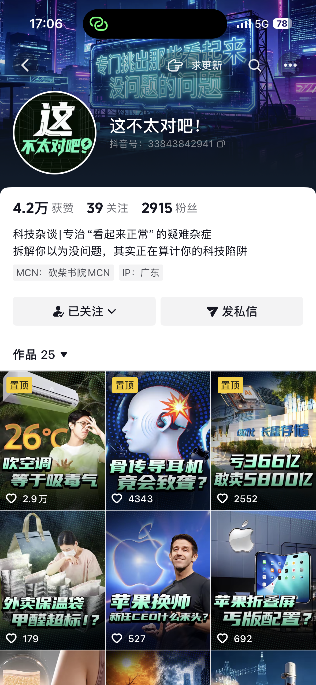
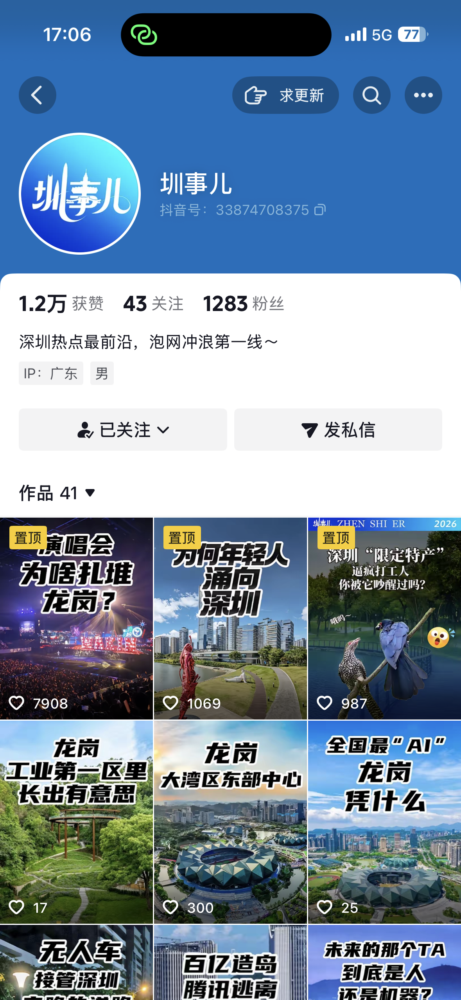
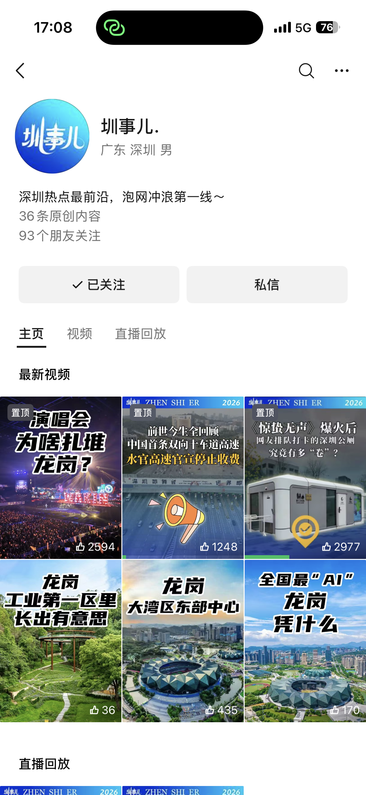
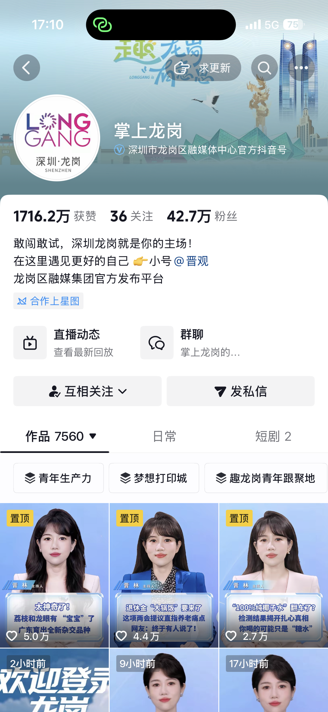
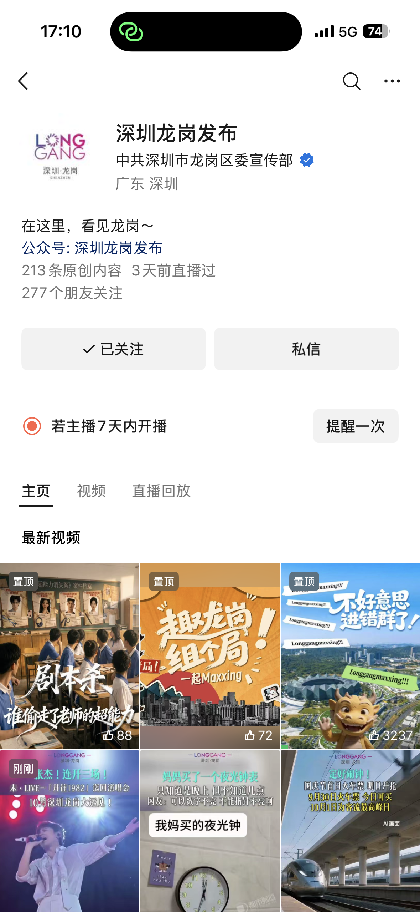
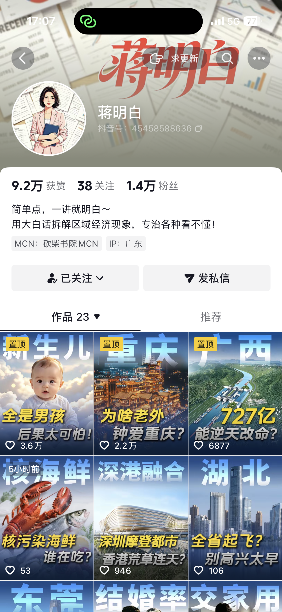

INTERACTIVE PROJECT / CODEX
A story you can play
A browser text game made with Codex. An exploration of interactive storytelling alongside video production.
MEDIA · STORYTELLING · AI
From the story on the ground to the story on your screen.
Nearly eight years in news and digital media. A full-time SUSS postgraduate with experience in channel launches, multi-account content operations, interview reporting and video storytelling.
SUSS student · Up to 16 hours/week during term
Operated 圳事儿, 这不太对吧 and 掌上龙岗 concurrently. Built a Feishu dashboard for manuscripts, editing progress and video metrics; reviewed publishing times, completion rates, comments and views to refine content, with selective paid promotion.
Account pages · Douyin and WeChat Channels

Scriptwriting & content operations

Channel launch, scripts & editing

Channel launch, scripts & editing

Scriptwriting & video editing

Scriptwriting & video editing

Contributed scripts · 36K likes on selected work
01 / PORTFOLIO
Selected work
INTERACTIVE PROJECT / CODEX
A browser text game made with Codex. An exploration of interactive storytelling alongside video production.
02 / BACKGROUND
Master of Science in Strategic IP and Innovation Management, Chinese-taught. Enrolled in 2026.
June–July 2026: contributed selected scripts on regional economic and social topics. Douyin followers: about 14,000. Selected work: Are All Newborns Boys? — 36,000 likes.
Helped build a technology news and commentary channel across Douyin, WeChat Channels and Xiaohongshu.
Built a local-affairs account from scratch, primarily writing scripts and also editing videos. Used comparable accounts and content performance to refine positioning.
News scripts, video editing, on-camera stories and university research reporting. Contributed content to a Douyin account with 426,700 followers and a WeChat Channels account with approximately 45,000 followers.
Jincheng College of Sichuan University
03 / CONTACT
Seeking a part-time social media opportunity. Start date and schedule by agreement.